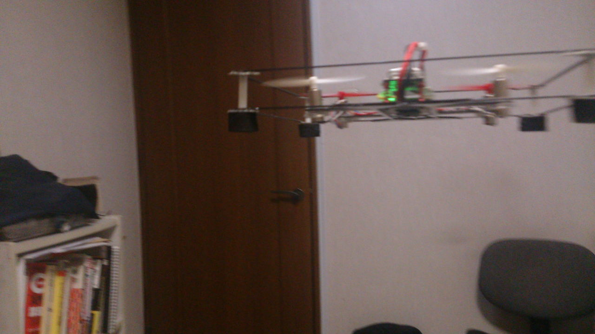

Published: 金 01 12月 2017
By Kaz Kojima
In articles .
tags: ardupilot esp32 KiCad

hachidori はPC上で走らせたArduPilotで制御する実験的なリモートセンサ/アクチュエータで, ArduPilotプロジェクトへの寄与を目的に始まったDCoJA による小さなプロジェクトです.
私はDCoJAのメンバーであるドローンワークス社のコントラクターとしてArduPilotを同社が開発していたFCにポーティングする作業を行っていたのですがhachidoriはその中で派生したプロジェクトでした. 私とドローンワークス社とのコントラクトはすでに終了していますがオープンなプロジェクトとしてhachidoriの開発を続けています. プロジェクトの成果はDCoJAを通じてソフトウェアやプロトタイプの回路図などがオープンソースとして公開 されています.
hachidoriからみるとArduPilotはセンサーデータを受け取りアクチュエータへの指示としてPWMの値を返すUDPサーバーです. このようなリモートセンサ/アクチュエータは実に古典的なアイデアですが,このスキームには大小様々な問題があります.
とりあえずトイドローンタイプのhachidoriの飛行はこんな感じです:
これはstabilizeモードです. APM(ArduPilot)はうまく姿勢を制御できているように見えます. arducopterはlaptop PCのUbuntu 4.4.0-lowlatencyカーネル上で動かしています.
250mmフレームにのせた別のhachidoriとAPMが動いているホストPCです:
実験的なhachidori用ドライバを含んだArduPilotのソースツリー等はDCoJAのgithubリポジトリ 中のardupilotのhachidoriブランチにあります.
hachidoriのファームウェアはesp-idf 上のapplication になっています.
テストやコンフィグレーションのためのPC上の小さなUDPサーバーがjunkyard の中にあります. b3testはセンサーデータの表示やモーターのテストのためのサーバー, b3confは設定や定数などをhachidoriに書きこむためのサーバーです.
レイテンシ latency
このようなスキームでの大きな問題の一つがレイテンシです. ご存知のように私達が普通に目にするほとんど全ての無線プロトコルはレイテンシに重点を置いていません. Wi-Fiを除けばそれらはいつも低消費電力が歌い文句ですしWi-Fiはスループット優先です. これらのプロトコルには再送という操作が存在することが多くこれがレイテンシの大きな原因となっています. 物理的データを再送するとリアルタイム性を失いあまり意味がない場合があります. ドローンのIMUから得られるデータが0.2秒遅れて送られて来た場合それは制御にどの程度役立つでしょうか? このケースでは再送などせずにさっさと次のデータを送って欲しいのですがそのようなプロトコルは一般的ではなく、またWi-FiやBTのようにある程度オープンなものはありません …
read more